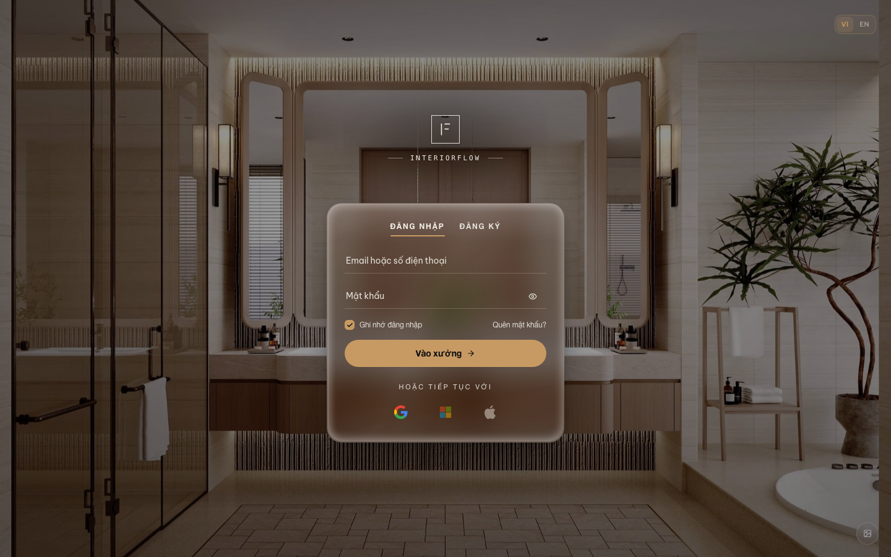
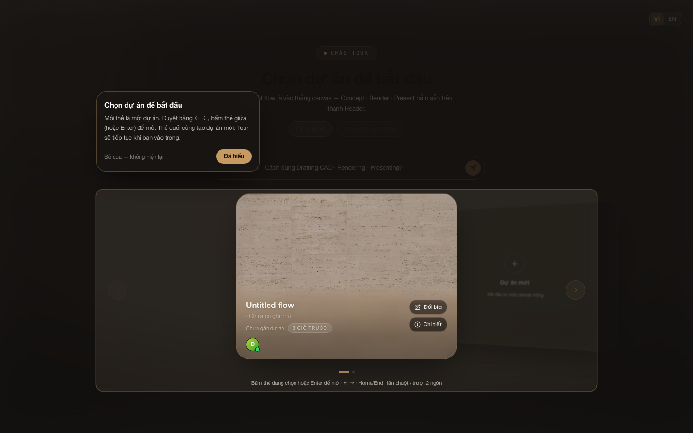
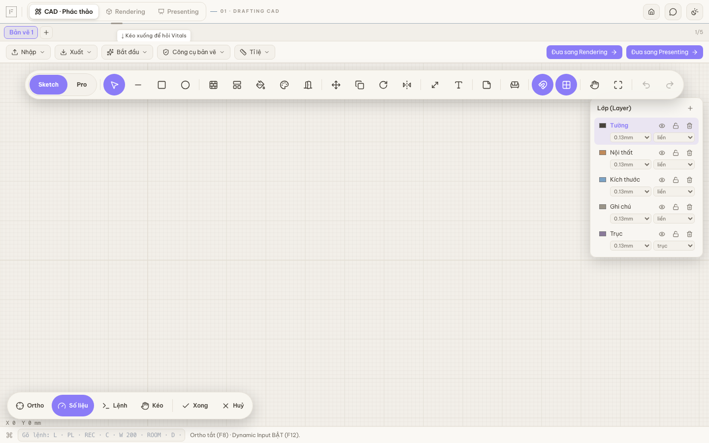
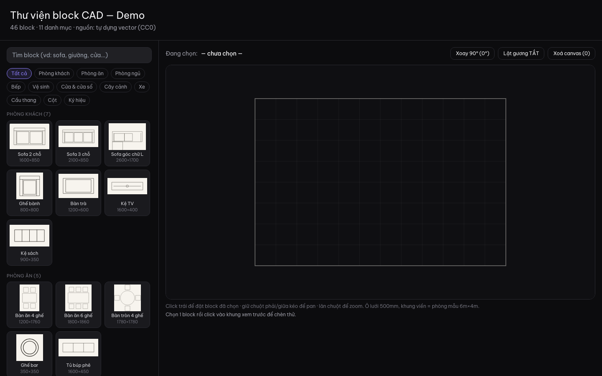
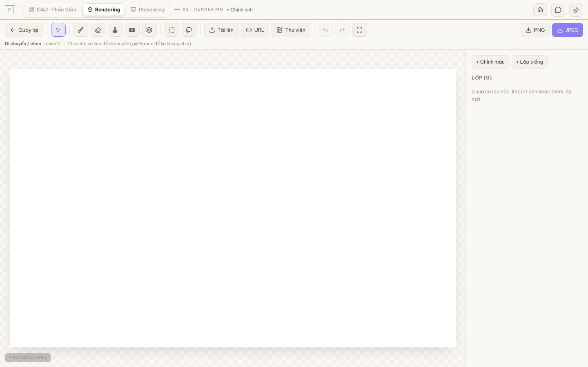
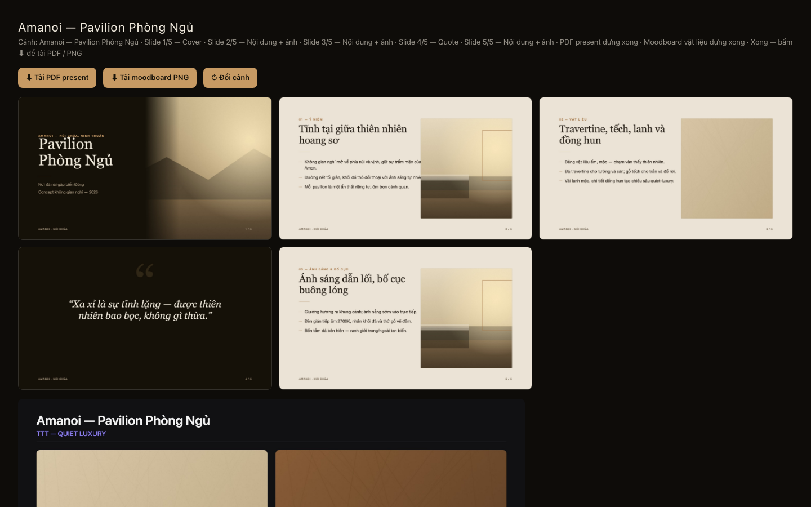
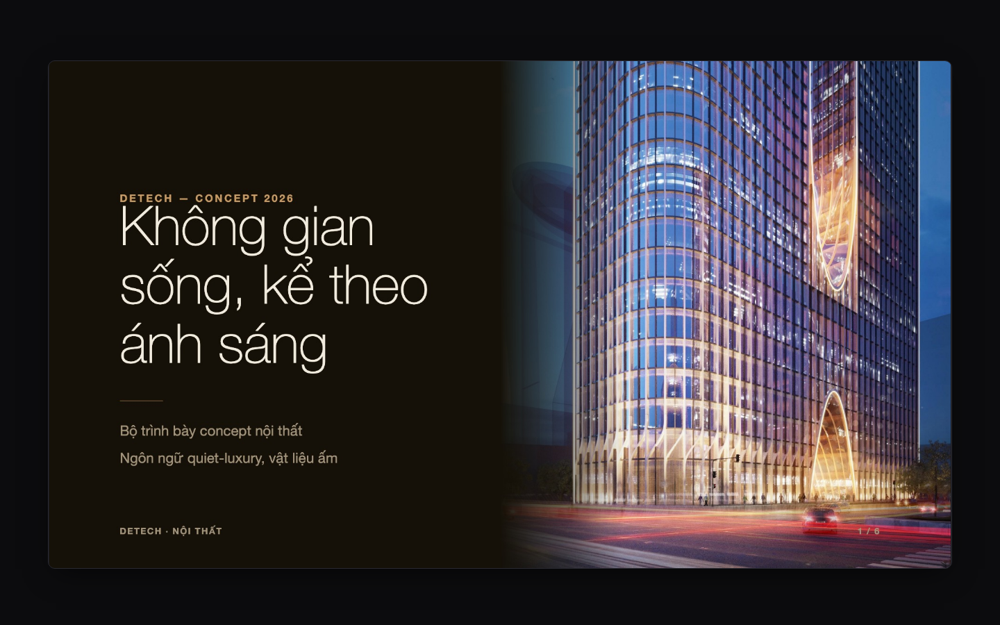
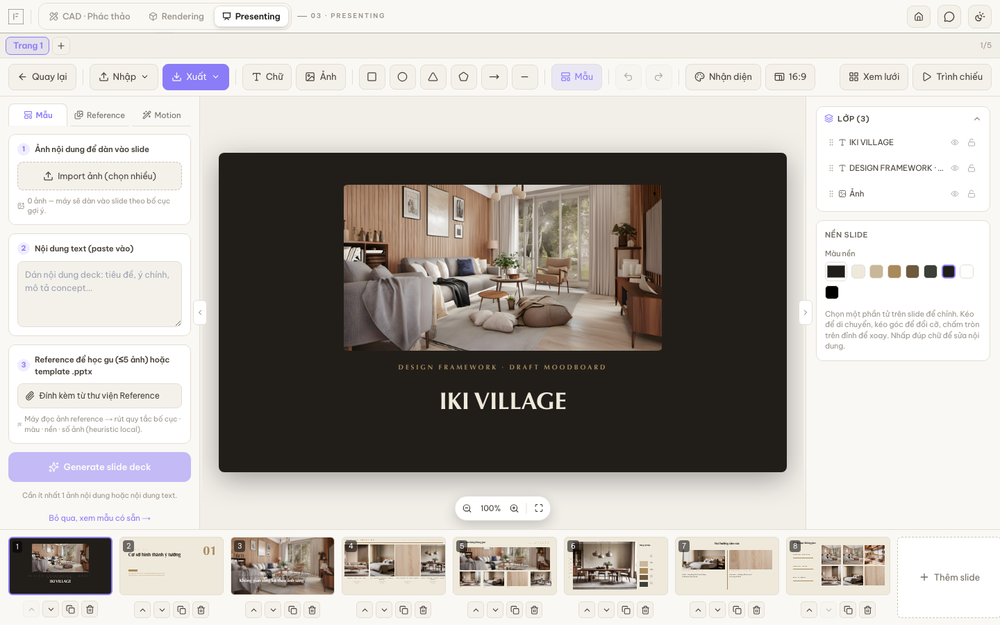

Bức tranh · The frame. InteriorFlow là canvas ba chặng nội thất — Drafting CAD · Rendering · Presenting — nằm trên nền Home/Gallery/Vitals AI/NotebookLM. Poster này chốt trạng thái từng chặng ở thời điểm audit, không mở thêm scope.
Cách đọc · How to read. Mỗi khối là một chặng: (1) tính năng chạy được, (2) sản phẩm output, (3) chất lượng 1–5 sao. Ký hiệu trạng thái ✓ = chạy · ~ = đang tinh · ! = còn nợ.
Nguồn · Source. Screenshots chụp trực tiếp tại 127.0.0.1:3015, tài khoản demo@if.local · commit 7737ab0. Nợ kỹ thuật trích từ STATUS.md cùng phiên.
00Nền · Shell
Gallery · Notebook · Vitals · Home shell

Login · Vào xưởng
Gallery · Chọn dự án
Tính năng · Features
- ✓Login điện ảnh (Việt/Anh, Google/MS/Apple, Remember, Quên MK)
- ✓Gallery card‑deck ngang, arrow/Enter/Home‑End · thẻ cuối = Dự án mới
- ✓Vitals AI overlay giọt kính v2 · SmartTour onboarding
- ✓NotebookLM 3 cột (source · chat · studio) · fix 404 slug↔cuid 23/07
- ~Drag‑to‑panel pre‑mount, ⌘K CommandPalette
- !⌘J Vitals chưa hook code · Morph login mới fade
Output · Deliverable
Workspace shell: `.env` + `dev.db.wt` cô lập worktree, session cookie if_session_wt, Perceptron learning‑to‑rank wired vào Vitals/LayoutShelf.
★★★★☆
4 / 5 · Ổn định, chờ polish motion
01Drafting · CAD
Drafting CAD · phác thảo hồ sơ DD

Toolbar Sketch/Pro · Layers
Thư viện block
Tính năng · Features
- ✓Command line CAD (L · PL · REC · C · W · ROOM · D)
- ✓5 layer khoá lineweight: Tường · Nội thất · Kích thước · Ghi chú · Trục
- ✓DXF import · DCEL half‑edge · Ortho/Snap/Dynamic Input
- ✓2 mode Sketch / Pro · Xuất · Nhập · Bắt đầu · Tỉ lệ · Khung tên
- ✓Cầu chuyển chặng "Đưa sang Rendering / Presenting"
- !Warning React "Cannot update a component…" điều tra không tái hiện
Output · Deliverable
Bản vẽ hồ sơ DD: khung tên TTT · tỉ lệ 1:100 · layer chuẩn A‑WALL/A‑FURN/A‑DIMS/A‑TEXT · handoff sang Rendering giữ toạ độ.
★★★★☆
4 / 5 · Đủ dùng DD, chưa CAD pro
02Rendering
Rendering · canvas node AI

Photo editor · Mask
Demo Amanoi · output
Tính năng · Features
- ✓Canvas React‑Flow node‑based · Concept / Sketch / Clay
- ✓4 mức phụ thuộc AI (fal · Gemini · NVIDIA · local)
- ✓Mask Painter · Annotate · Moodboard modal · Lightbox
- ✓NVIDIA_API_KEY đã rotate 23/07, verify OK
- ~Property Render chưa Undo · meta giá/vendor/sku trống
- ~Z‑Image 6B local không kham trên Mac 16GB (đã note)
Output · Deliverable
Ảnh render nội thất chất lượng ref (SCDA / Aman / quiet‑luxury) · stack node có thể replay · brief AI được Perceptron gợi ý layout.
★★★☆☆
3 / 5 · Cần undo + meta + polish node
03Presenting
Presenting · dàn slide · PDF

Present mode · Detech
Editor · Mẫu · Reference · Motion
Tính năng · Features
- ✓Editor 3 tab: Mẫu · Reference · Motion · lớp Text/Ảnh/Shape
- ✓Filmstrip 8+ slide · thêm/nhân bản/xoá · sort tại chỗ
- ✓Present Mode toàn màn · 16:9 · nền beige/navy/orange
- ✓Brand kit TTT · Xuất PDF present · Xuất Moodboard PNG
- ✓ML Layout Shelf: học từ chọn tay (learning‑to‑rank)
- ~Motion tab đơn giản, chưa keyframe timeline
Output · Deliverable
Bộ deck 5–20 slide + PDF present + moodboard PNG · font Archivo · brand mode kép · đủ chuẩn trình khách hospitality/office.
★★★★★
5 / 5 · Chặng chín nhất, xuất được ngay